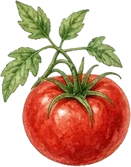

About the RGA
The Ruddington Gardeners’ Association was founded in 1934 to promote and encourage the interests of gardeners in the village and surrounding area.
Who can join?
The RGA is open to everyone in Ruddington and beyond, of all ages and abilities:
- Armchair gardeners
- Patio and window-box planters
- Those more ‘green fingered’
- Allotment holders
What we do
- Monthly meetings with speakers and social evenings
- Members group seed purchase and produce, plants & seeds sharing
- Garden visits and outings (including RHS gardens)
- Support for local allotments (Hareham Gardens, Paradise Gardens)
- Involvement with Ruddington Open Gardens (charity event)
- Sharing practical local growing knowledge
Meetings
- When: last Wednesday of most months
- Time: 7.30pm
- Where: The Hermitage, Wilford Lane, Ruddington